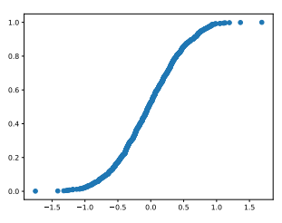
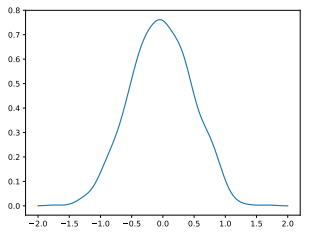
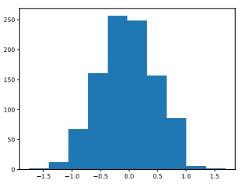
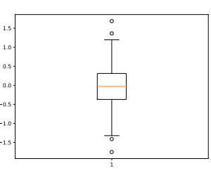
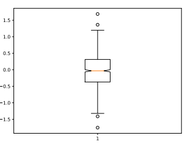
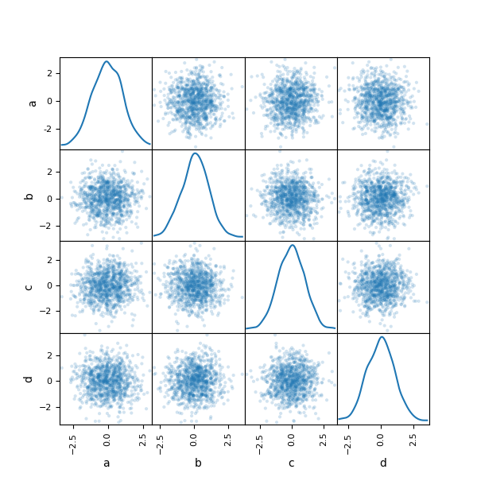
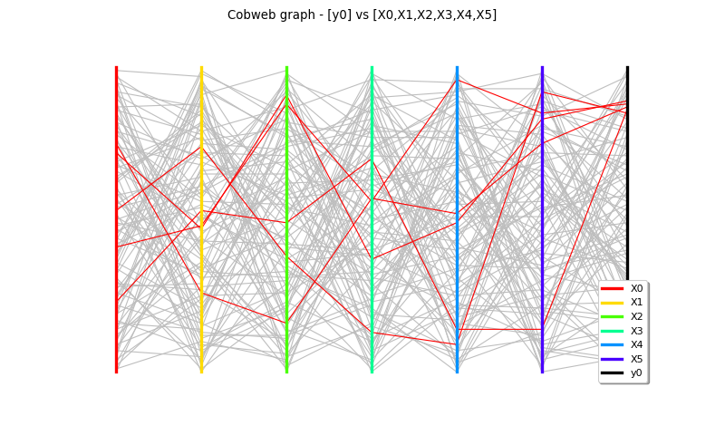

4. Uncertainty quantification¶
Statistical measures (statistics)¶
Expectation¶
The expectation is the first moment.
The expectation is the mean of \(X\), i.e. its central trend:
\(\forall (a,b)\in\mathbb{R}^2,~\mathbb{E}[aX+b]=a\mathbb{E}[X]+b\).
Variance¶
The variance is the second central moment.
The variance is the mean squared dispersion of \(X\) w.r.t. its central tendency:
\(\forall (a,b)\in\mathbb{R}^2,~\mathbb{V}[aX+b]=a^2\mathbb{V}[X]\).
Standard deviation¶
The standard deviation is the square root of the variance:
Note
\(\sigma\equiv 0 \Leftrightarrow X\) is determinist.
Coefficient of variation¶
The coefficient of variation is the standard deviation normalized by the expectation:
Moments¶
\(\forall k\in\mathbb{N}^*\),
is called a moment,
is called a central moment and
is called a standardized moment.
\(m_{3,s}\) represents the skewness of the distribution, a measure of its asymmetry, and \(m_{4,s}\) represents its kurtosis, a measure of its "tailedness" .
Expectation and variance are the most popular moments.
Monte Carlo sampling¶
Introduction¶
Statistics are integrals of quantities of interest. For example, the expectation of the model output can be written as
Computing \(I\) analytically is often impossible and a brute force approach is Monte Carlo (MC) sampling:
where \(x^{(1)},\ldots,x^{(N)}\) are \(N\) independent realizations of \(X\).
Properties¶
\(\hat{I}_N\) tends to \(I\) when \(N\) tends to \(\infty\) but with a slow convergence in the order of \(1/\sqrt{N}\). In other words, dividing the error by \(M\) implies to multiply the number of samples by \(M^2\). To be 10 times more precise, 100 times more evaluations are needed.
The convergence rate is independent of the dimension of \(X\). The only limitation to the use of a Monte Carlo estimator is the evaluation cost of \(f\) not allowing a sufficient number of evaluations \(N\) to achieve the desired accuracy of the MC estimator.
Examples¶
Mean:
Variance:
CDF
Quantile
Probability
Warning
MC techniques for probabilities and quantiles are very costly, requiring \(N=10^{r+2m}\) evaluations for a probability of \(10^{-r}\) with a CoV of \(10^{-m}\), e.g. \(N=10^5\) evaluations for a probability of 99.9% with a CoV of 10%.
Visualizing a 1D variable¶
Example with 1000 instances of a Gaussian variable with 0 mean and 0.5 standard deviation.
Textual statistics¶
| name | value |
|---|---|
| mean | -0.030262 |
| std | 0.491196 |
| min | -1.752956 |
| 25% | -0.370826 |
| 50% | -0.032611 |
| 75% | 0.312060 |
| max | 1.687337 |
Empirical CDF plot¶

Empirical PDF plot¶
We use a kernel-based estimator of the form:
where \(x^{(1)},\ldots,x^{(N)}\) are observations.

Histogram¶

Boxplot¶

- Box = [Quantile(25%),Median,Quantile(75%)]
- Inter Quartile Range (IQR) = Quantile(75%)-Quantile(25%)
- Whiskers = Median \(\pm \kappa \times\) IQR
- Circles = outliers
Notched boxplot¶
A notched boxplot is a boxplot with confidence interval for the median estimator.

Visualizing several 1D variables¶
Scatter matrix¶

Cobwebplot¶
Also known as parallel coordinates.
